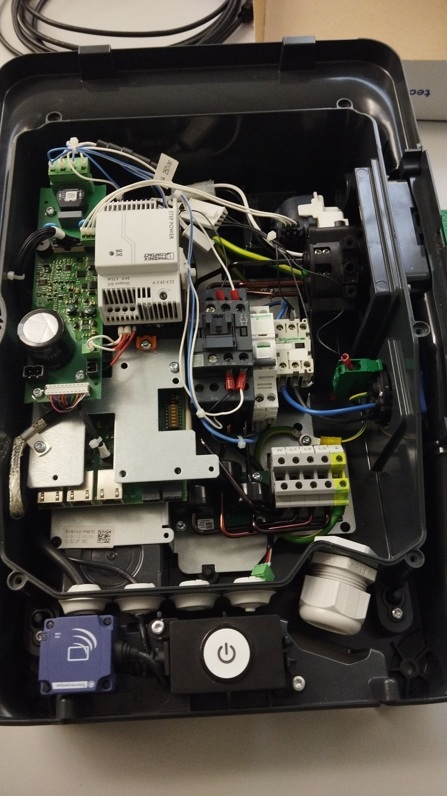
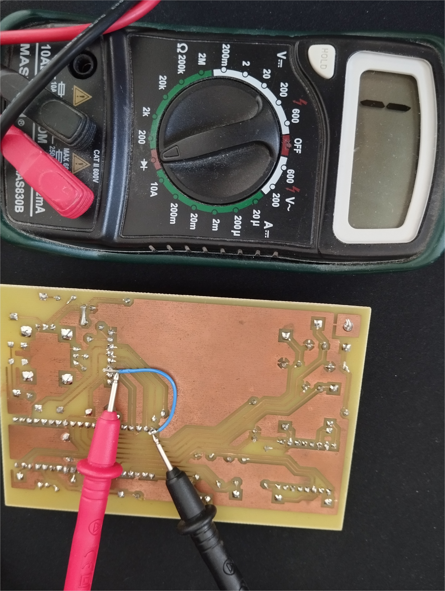

PORTFOLIO BUT1
Concevoir

Concevoir

Concevoir

Verifier
Verifier
Verifier

Produire une analyse fonctionelle d'un systeme simple

Réaliser un prototype pour des solutions techniques matériel et/ou logiciel
Rediger un dossier de fabrication à partir d'un dossier de conception.
Appliquer une procédure d'essais
Identifier un dysfonctionnement
Décrire un dysfonctionnement
Produire une analyse fonctionelle d'un systeme simple
☐ J'ai appris à détailler précisément des système plutôt simple en expliquant étape par étape le fonctionnement d'un système.
☐ J'ai compris que la réalisation de schéma fonctionnel sont très efficace pour expliquer toutes les caractéristiques présentes.
☐ J'ai découvert l'importance de diviser le système en sous-systèmes pour mieux comprendre son fonctionnement global
☐ Cela m'a permis de mieux saisir la relation entre les aspects théoriques et pratiques, ainsi que l’importance d’une analyse approfondie pour éviter les erreurs lors de la conception du système.
Réaliser un prototype pour des solutions techniques matériel et/ou logiciel
☐ J'ai appris à concevoir et réaliser des prototypes lors de mes projets en SAE ou mes projets personnels, j'ai appris à utiliser des logiciels de Conception Assistées par Ordinateur (CAO) tel que Proteus pour la création de schéma électronique et la réalisation de routage.
☐ J'ai également appris à utiliser de nouveaux logiciel tel que QelectroTech qui permet de réaliser toute la partie électrique d'un projet où l'ont fait alors des schémas comprenant des contacteurs ou encore des disjoncteurs.
☐ Au fur et à mesure des séances projets j'ai progressé en apprenant à chaque fois des nouvelles astuces avec par exemple la position des différents composants, il est plus intéressant de mettre les composants les plus gros en premier ainsi que les alimentations ou encore l'optimisation de la place et la simplicité de passage des pistes afin d'avoir un coté plus esthétique
Rediger un dossier de fabrication à partir d'un dossier de conception.
☐ Pour rédiger un dossier de fabrication, la première étape consiste à analyser minutieusement le dossier de conception. Je m'assure de comprendre en profondeur les spécifications techniques, les schémas, et toutes les données associées. Cette compréhension globale me permet de saisir les objectifs et les contraintes du projet, ainsi que les attentes en termes de qualité et de performance du projet.
☐ Une fois le dossier de conception assimilé, je procède à sa décomposition en différentes taches afin d'avoir une bonne organisation. Ensuite, je détermine tout les éléments dont j'aurais besoin pour la fabrication du projet. Cela passe par une recherche des composants (lecture des datasheets) en donnant la nomenclature puis le dimensionnement de la futur carte électronique ainsi qu'insérer les différents schéma (schéma d'implantation, schéma des typons, routage, schéma structurel).
Appliquer une procédure d'essais
☐ J'ai pu appliquer pour la première fois une procédure d'essai sur mon projet d'SAE, une carte électronique agissant tel un variateur de lumière . Sur la carte, nous pouvions retrouver différents points de masse nous permettant ainsi de voir sur un oscilloscope la tension présente aux bornes des différents dipôles.
☐ J'ai également appris à utiliser un multimètre pour pouvoir vérifier si les composants étaient belle et bien dans le bon sens.
Identifier un dysfonctionnement
☐ A l'aide de nos outils et en respectant le cahier des charges, j'ai appris à comparer nos mesures aux valeurs attendues sur la fiche technique. Du point de vu fonctionnel, la carte était opérationnel mais les valeurs retrouvées n'étaient pas toutes exactes. Sur ce premier projet, nous n'avons repéré aucun dysfonctionnement majeurs. Voici le fonctionnement du variateur de lumière :
☐ L'utilisation d'un multimètre est très intéressant pour ce genre de panne puisqu'il nous permet de vérifier les éventuels courts-circuits, les possibles surcharges sur la carte ou encore vérifier si les normes des composants sont juste ou non.
☐ On utilise également d'autres appareils tel que l'oscilloscope qui nous permet de vérifier si nos signaux sont bien ceux qui sont attendues par exemple dans l'envoie de données sous formes de bits, cela nous permet de voir si les bits envoyées au niveau de la programmation sont bien ceux envoyées électriquement sur la carte.
Décrire un dysfonctionnement
☐ Une fois que l'on a retrouvé la nature du dysfonctionnement, j'ai appris à le décrire en expliquant la cause de celui ci comme avec notre projet de SAE sur une carte de jeu rétrogaming.
☐ Sur ce dysfonctionnement, nous avions une connexion manquante pour l'écran, j'ai ajouté un fil pour pouvoir connecter l'écran à la carte électronique ce qui a pu résoudre le problème.
☐ Il y avait également quelques problèmes de connexion au niveau des soudures, que j'ai pu facilement régler à l'aide d'un multimètre et d'un fer à souder.